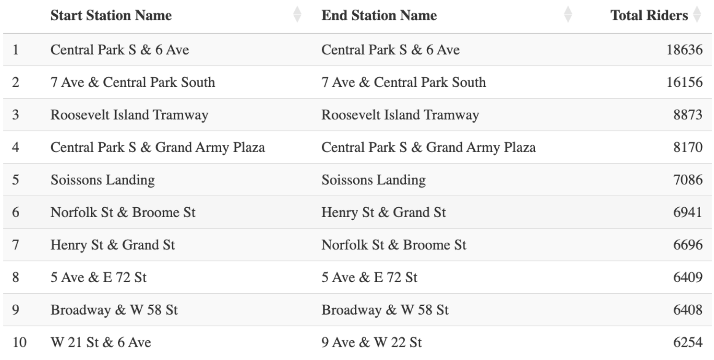
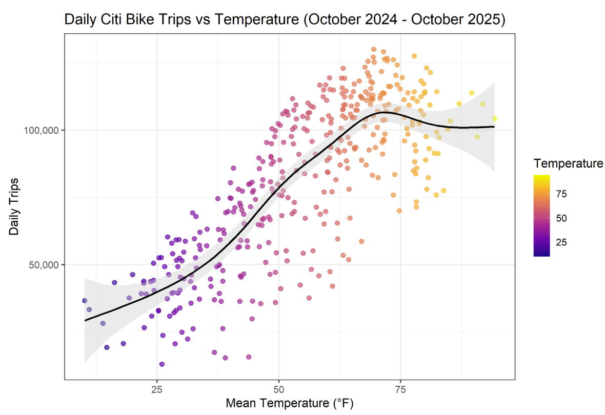
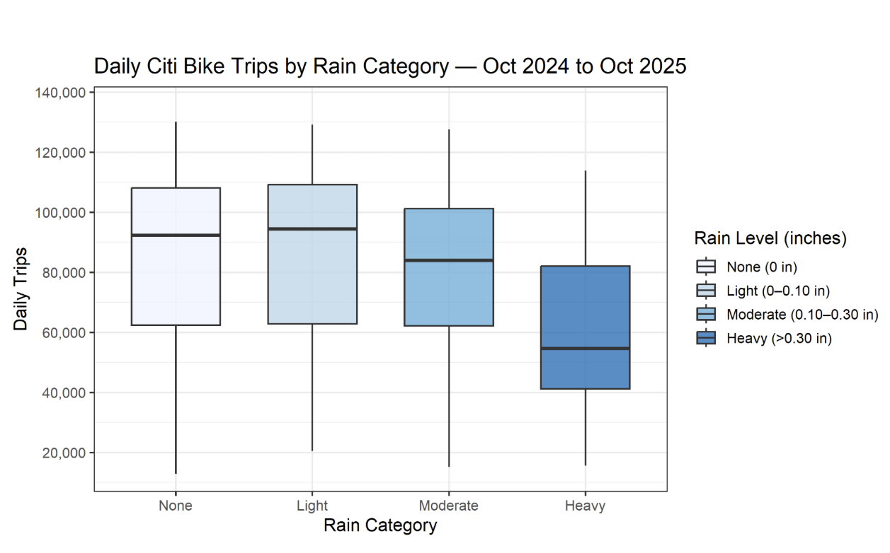
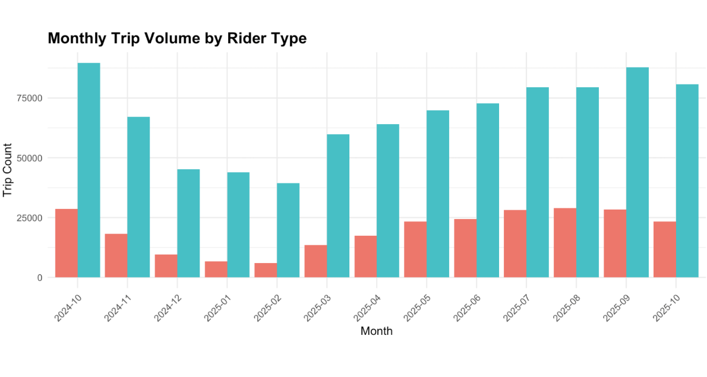
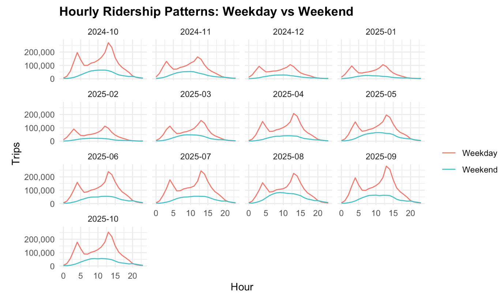

Pedals, Pavement, and Patterns: Citi Bike in Manhattan
Overarching Question (OQ)
How do weather, time, location, bike lane infrastructure, and rider type affect Citi Bike trip volume in Manhattan?
Citi Bike is part of everyday transportation in Manhattan. Riders use the system for commuting, short errands, recreation, and tourism. Because of this, ridership changes throughout the day, across seasons, and from one neighborhood to another. Understanding what drives these changes is useful for both planning and daily operations.
The OQ focuses on how several important factors work together to shape Citi Bike demand. No single factor explains the full pattern of ridership on its own. By studying each factor separately and then connecting them, we can better understand how the system behaves under different conditions.
Key motivations for this question include:
- Helping planners understand when and where new bike lanes may have the greatest impact
- Supporting Citi Bike operations by identifying predictable rush periods
- Showing how weather shifts overall demand levels
- Giving the public a clear explanation of what shapes bike availability
Specific Questions (SQs)
What are the most popular bike routes and resting stops?
This question identifies where Citi Bike trips most often begin, end, and connect. By examining popular routes and high-traffic stations, we can see how riders move through Manhattan and which locations consistently experience high demand.
How do temperature and precipitation affect ridership activity?
Weather influences whether people choose to ride. Warmer temperatures generally encourage biking, while rain tends to reduce trip volume. This SQ isolates the effect of weather to understand how much it shifts overall ridership levels across days and seasons.
How does rider type influence both demand and riding patterns?
Members and casual riders use Citi Bike for different purposes. Members often ride for commuting, while casual riders are more likely to ride for leisure. This SQ helps explain who is driving ridership changes and how usage patterns differ across rider groups.
How does time of day and day of week impact overall ridership trends?
Citi Bike usage follows clear daily and weekly cycles. Commute hours create weekday peaks, while weekends show different patterns. This SQ establishes the temporal structure of demand and helps explain when the system is most heavily used.
How does station infrastructure relate to e-bike versus classic bike usage?
Different types of infrastructure may influence the choice between e-bikes and classic bikes. This SQ explores whether proximity to certain lane types or station characteristics is associated with higher e-bike usage compared to classic bikes.
Citi Bike Trip Data
Source: Citi Bike Records
Citi Bike trip data form the backbone of this analysis, providing a comprehensive record of bike-share usage across Manhattan. Each trip record includes a start time, start location, rider type, and bike type, allowing us to study when, where, and how riders use the system.
Time Resolution
- Daily aggregation was used when analyzing weather effects, since temperature and precipitation vary meaningfully from day to day.
- Hourly aggregation was used for time-of-day and day-of-week analyses to capture commute peaks and daily usage cycles.
Trip Inclusion Rules
- Only trips starting in Manhattan were included.
- Trips ending outside Manhattan were kept, since riders make their rental decision at the starting station.
- Trips with missing start coordinates were removed.
Rider Types
The analysis distinguishes between:
- Member vs. casual riders
- E-bike vs. classic bike trips
Station-Level Aggregation
For infrastructure-related analyses, trips were aggregated to the station-day level, allowing direct comparison across stations with different nearby lane types.
Limitations
- Station demand may reflect access to multiple nearby routes, not just the closest bike lane.
- Trip counts capture observed usage, not unmet demand (for example, when bikes or docks are unavailable).
Weather Data
Source: Open-Meteo API
Variables Used
- Daily mean temperature (°F)
- Daily precipitation (inches)
Spatial Representation
Weather conditions were measured using a single fixed reference point in Midtown Manhattan. Given Manhattan’s geography, this was treated as a reasonable approximation of weather conditions.
Precipitation Categories
- None: 0 inches
- Light: ≤ 0.10 inches
- Moderate: ≤ 0.30 inches
- Heavy: > 0.30 inches
Limitations
- Weather may vary slightly across neighborhoods, which is not captured by a single reference point.
- Short-duration or extreme weather events within a day may be averaged out in daily data.
Bike Lane Infrastructure Data
Source: NYC DOT Bike Routes
Bike lane data were used to examine whether station demand differs based on nearby cycling infrastructure.
Lane Classification
Bike lanes were grouped into two broad categories:
- Protected lanes
- Shared lanes
Establishing Proximity
A station was considered near a lane if it was within 100 meters of that lane type.
Stations that were equidistant to both protected and shared lanes were removed to avoid ambiguous classification.
Limitations
- Riders may not always use the nearest bike lane
- Stations may serve riders accessing multiple nearby lanes
- Infrastructure data may not perfectly reflect real-world conditions at every point in time
Scope and Framing Choices
Why Manhattan Only?
The analysis focuses exclusively on Manhattan because it:
- Has the highest station density and trip volume
- Contains variation in bike lane infrastructure within a compact area
- Avoids noise from suburban or low-density regions
- Improves interpretability for planners and policymakers
- Keeps computation feasible while maintaining analytic depth
What Was Not Modeled
- Pricing changes
- Bike rebalancing operations or service outages
- Holidays and special events
- Subway disruptions
- Long-term growth or trend effects
Engagement with Prior Literature
Protected Bike Lanes and Ridership (2025)
Effect of Protected Bike Lanes on Bike-Sharing Ridership
This study examines whether protected bike lanes lead to increased Citi Bike usage. Using a causal research design and several years of system-wide data, the authors find that ridership increases after protected lanes are installed. Their results provide strong evidence that safer infrastructure can encourage more people to use bike-share systems. However, the analysis focuses on overall ridership changes rather than how usage varies at individual stations. The study also does not incorporate weather conditions, making it difficult to separate the effects of infrastructure from environmental factors. As a result, while the findings support the importance of protected lanes, they leave open questions about how these effects play out in dense areas like Manhattan at a more detailed spatial level.
Urban Environment and Visual Context (2024)
Deciphering Urban Bike-Sharing Patterns
This next study takes a different approach by examining how natural environment features and visual street characteristics relate to Citi Bike usage. The authors analyze how factors such as visibility, traffic-related visual elements, and urban form influence ridership patterns. Their results suggest that aspects of the surrounding environment, particularly those associated with motorized traffic, are negatively related to cycling activity. The study provides valuable insight into how the built environment shapes rider behavior, but it does not consider proximity to specific bike-lane types, such as protected versus shared lanes. I
Weather and Citi Bike Usage (2019)
Weather and Cycling in New York: The Case of Citi Bike
Finally, this study talks about how temperature and precipitation have a strong influence on ridership, even after accounting for factors such as infrastructure and calendar effects. The authors find that weather explains a substantial share of day-to-day variation in Citi Bike usage, often more than infrastructure or location alone. While this study highlights the importance of environmental conditions, it relies on older data predating system expansions and does not examine how weather interacts with station-level context or lane proximity.
How This Project Extends Prior Work
Combining weather, time, rider type, and infrastructure
Rather than analyzing one factor at a time, this project considers hourly temperature and precipitation, time-of-day and day-of-week patterns, rider type, and proximity to protected versus shared bike lanes. Studying these factors together allows the analysis to capture how they interact with each other.Using recent data that reflects current network conditions
The analysis uses Citi Bike trip data from 2024 to 2025, reflecting recent system expansion, increased e-bike availability, and updated bike-lane infrastructure. Contrary to our study, earlier ones often rely on older data that may not be representative of current riding behavior.Isolating Manhattan, where density and infrastructure are most concentrated
Manhattan contains the highest density of Citi Bike stations, the greatest trip volumes, and a wide mix of protected and shared bike lanes within a compact area. By focusing exclusively on Manhattan, the project reduces noise from lower-density areas and allows for clearer comparisons across stations in a setting where bike-sharing plays a central role in daily transportation.
Most Popular Routes Findings

Findings:
Citi Bike demand is highly concentrated around a small number of Manhattan hubs, particularly near Central Park, major transit nodes, and waterfront corridors
The single most popular route — Central Park S & 6 Ave ↔︎ Central Park S & 6 Ave — recorded 18,636 trips, exceeding most other routes
Limitations:
Observed route counts do not capture unmet demand when docks or bikes are unavailable, so true demand concentration may be understated
High volumes may reflect station density and placement rather than rider preference for a specific location
Start–end data do not capture the actual path taken, limiting inference about street-level route choice
Implication:
Spatial results identify where demand concentrates, but not definitive evidence of preferred riding paths or infrastructure quality.
Temperature vs. Precipitation Findings


Findings:
Temperature is the main weather driver of Citi Bike demand
The GAM curve shows a strong non-linear increase in trips between roughly 40°F and 70°F, followed by a plateau, indicating diminishing gains from additional warmth
Precipitation suppresses demand, but less sharply than temperature:
Median trips consistently decrease from None → Heavy rain
Light rain days show comparable or slightly higher medians than dry days, suggesting commuter tolerance for mild precipitation
Heavy rain compresses both median and upper-quartile usage
Limitations & uncertainty:
Daily aggregation averages out short, intense rain events that may strongly affect specific hours
Weather effects are correlated with seasonality, complicating causal separation without additional controls
Members vs. Casual Riders Findings


Findings:
Members account for the majority of trips in every month, showing stable, year-round usage
Casual ridership is strongly seasonal, rising sharply in warmer months and collapsing during winter
Casual rides are substantially longer, especially during late-morning and afternoon hours, consistent with recreational and sightseeing behavior
Member rides cluster around weekday commute peaks, reinforcing Citi Bike’s role as everyday transportation
Limitations:
Rider type does not directly observe trip purpose
Changes in membership composition over time are not separately identified
Protected vs. Shared Bike Lanes Findings

Findings:
Stations closest to protected bike lanes consistently outperform those near shared lanes
Large and persistent differences appear across the distribution:
Mean: 47.4k (protected) vs. 35.9k (shared)
Median: 43.5k vs. 26.9k
Q3: 69.1k vs. 57.9k
The entire ridership distribution shifts upward near protected lanes, indicating systematic effects
Limitations:
Proximity does not guarantee that riders use the nearest lane
Infrastructure quality is simplified into two categories, masking design variation
Lane data may not reflect temporary disruptions (e.g., construction)
Time of Day and Day of Week Findings

Findings:
Time-based patterns explain the largest short-term fluctuations in ridership
Weekdays show sharp commute peaks:
Morning: ~7–8 AM
Evening: ~5–6 PM
Weekends lack commute spikes and instead show broad midday demand (~12–4 PM)
These patterns are remarkably stable across months, even as total volume changes
Limitations:
Hourly aggregation masks station-level congestion effects
Holidays and special events are not explicitly modeled
Time patterns interact with weather but are analyzed separately.
E-Bike vs. Classic Bike Usage Findings


Findings:
E-bikes account for approximately 68% of all trips
Casual riders rely more heavily on e-bikes, consistent with comfort and effort reduction
E-bike usage is highest:
At lower-traffic or weaker-infrastructure stations
During evening commute hours, suggesting preference for easier rides home
Members remain more cost-sensitive, favoring classic bikes where infrastructure is strong
Limitations:
E-bike availability and pricing vary by station and time, which is not modeled
Battery constraints and rebalancing dynamics are not observed